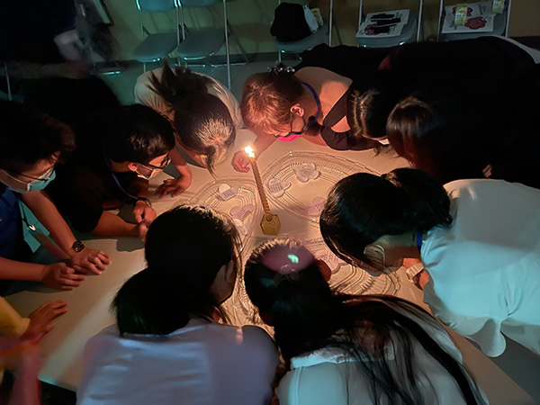
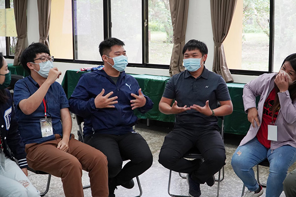
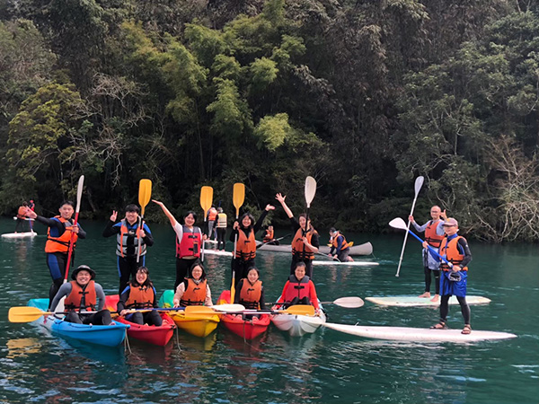

探索教育中心為近年來教育訓練的新方向，茲將探索教育中體驗學習的思想背景及理論基礎作整理介紹，分享於教育先進並請指正。
一、體驗學習的教育哲學
（一）思想背景
- 社會教改運動：在二十世紀初，美國為尋求適應劇烈的都市化與工業化而興起一連串的社會教育與政治改革運動，而其中「進步主義」教育運動是教改重要部份。教改認為教育即生活，學生要學習如何適應及改造目前的生活，同時教導學生民主的觀念，培育公民生活。這些運動因而塑造了當時美國生活的特徵。
- 對傳統教育的反動：傳統教育強調的是形式訓練的教學法、心智學習與古典研讀等。但教改人士對傳統教育方式展開嚴厲的批判，到杜威時，其觀點更是帶動進步主義教育運動的重要理論。進步主義的主要批判點在於對傳統以成人眼光的教育制度不滿，而主張要以學童興趣為教育的中心來進行教育。認為知識應該是一種解決生活問題的能力，增進經驗轉化的能力，教材應是與學生切身相關的實用知識。
- 實用主義的影響：實用主義是美國本土化的一種哲學，強調「有用者為真」的真理觀，如此一來，與學童生活經驗相關聯的實用知識就受到進步主義學者的青睞，而強調實用科學、從做中學等教育新觀念。
（二）代表人物
杜威（John Dewey）是此一教育思潮最重要的代表人物。最重要的教育著作為杜威的「民主主義與教育」（Democracy and Education），以下簡述杜威此方面的論述。
（三）杜威教育思想
教育家杜威在1916年出版的「民主主義與教育」（Democracy and Education）一書，可說是二十世紀以來最偉大的教育名著，其內容和主張對於美國及世界許多國家的教育理論和實際都有深遠的影響。以下即從教育的意義與功能、教育理論、教育目的論、方法論、課程內容等主題探討杜威的教育思想。
- 教育的意義與功能
- 教育是生活必需品：杜威認為，教育是人類生活的需要。人類生活的本質是努力延續生活下去，而唯有經常的創新才能確保延續，因而生活是一種創新的過程。在這種創新的傳遞過程中，人與人必須藉由溝通互動來進行思想與文化等的傳承；經由這種彼此分享經驗直到該經驗成為共有物，產生集體記憶的過程（心理學家榮格稱為集體潛意識），而參與的雙方性格都會受其影響而產生變化。教育過程即是藉由溝通來傳承文化傳統與思想的作用。
- 教育是社交功能：杜威認為，教育有其社交的功能。人生於世，就不免與他人產生交際，參與社會的各種活動。當個人參與了活動，就會以那活動目的為自己的目的，並且熟悉方法與材料，獲得必要的技能與情感浸潤，這就是一種教育歷程，例如參加各種社團活動所產生的教育功能。
- 教育是引導：杜威認為，教育有其引導功能。年輕人天生的衝動與其剛加入的群體及生活習俗不和，因而要接受成人的引導。成人引導年輕人適應社會，平衡個體與群體間衝突的過程就是一種教育歷程。
- 教育是成長：教育也可視為是一種成長。杜威以為，個人都有成長的可能性，藉由個人潛能的激發與他人的激勵幫助，就可以從經驗中學習。透過這種經驗的學習，能使我們控制環境、尊重環境，發展能力以應大自然的需要。
- 教育的目的：杜威嘗言，「教育無目的」，其意味教育並無外在目的，而是受教者接受教育以自我成長本身即為目的，是為一種內在目的。杜威指出，生長是生活的特徵，教育即是生長，除了生長之外，沒有其他的目的。若要衡量學校教育的成效，僅需要看他是否能提供個體繼續不斷的生長與方法即可。
- 教育的方法：杜威在教育方法論方面的主張，是根據「思維術」（How we think）一書中所提到的科學的，或是實驗的思考方法。思考的步驟如下：發現問題、情境觀察、形成合理謹慎的假設、以及實際的實驗來考驗這個假設。在教育上，學校中的教學若能將重點放在良好思考習慣的培養上，則各科的教學歷程便能予以統一。台灣近年的九年一貫教改即有此觀念。
- 教育的內容：杜威相當強調實作的重要性，提出「從做中學」（learning by doing），因而無論在課程的編排上，或是教材的選擇上，都以學生興趣所在、隨身所得並能實地操作為原則。
二、體驗學習的類型：
（一）杜威的體驗學習模式（Deweys Model of Experiential Learning）
杜威在所著的「學校與社會」（School and Society）一書中，他認為「學校就如一個社會」，青少年在學校的學習，該包括社會的活動，換句話說，就是在學校裡學習一切公民活動，使學校的生活和社會生活打成一片，而不是把學校當做象牙塔，與社會活動完全脫節。照他的說法來做，學校的學習要以實際的活動為主。
大家都知道杜威的幾句名言，即是「教育即生活。生活是經驗繼續不斷的重組和改造。」這也就是一個人能夠由學習而進步的意思。經驗要從實際活動中獲得。照杜威的意思舉例來說，如果要學生學習一條河流，不是教他讀地理課本或是看地圖，而是帶他（可能時）去看看這條河（當然只能看到附近的一段），引起學生的興趣，然後自己去看地圖，看這條河流經的的地方和起迄點。學生自己找地圖看，是真正的要看，看過後才會有深刻的印象，才會納入於經驗之中，和老師命令看的效果完全不同，這也是杜威的另一句名言「從做中學」的意思。他的另一本著作，「經驗與教育」（Experience and Education）就在說明這個主張。另一方面，大家知道「實用主義」（Pragmatism）是美國的幾位哲學家（Peirce, Child, James）提出的，杜威也是實用主義的主張者。實用主義就是以經驗為本體，經驗本體是「連續」和「改變」。在教育經歷中，一個人存在逾期生活的環境中，環境對人產生的影響，就如人遇到刺激，而發生反應，再反應到環境中去，這兩種作用，稱作人換環境的交互作用。交互作用連續不斷，人的經驗也就時時刻刻的改變與轉化。教育就是連續經驗累積和轉化改變的歷程。
而目前台灣教育界強調「生命教育」亦有此概念，即教導學生尊重其他生命、和大自然環境的一切一起歡樂、一起傷悲，讓學生自己飼養小雞，採取實踐體驗式的教育。缺乏與自然接觸的機會，小朋友會以為魚都是一片一片在水中游泳、小雞都是像炸雞的樣子…。學生將小雞養大後再殺來吃，一開始覺得惡心，但慢慢變得嚴肅，一邊品嚐一邊流淚，此時，心中也充滿真正感謝的意念。
- 杜威學說的影響
- 指引教育改革的方向：杜威的教育學說，深刻的指引了二十世紀教育的走向，尤其是美國及其民主陣營國家的重大教育政策，均受到杜威思想的影響。在美國本土，甚有跟隨著杜威民主主義的教育路線，開展出進步主義的教育運動，徹底的進行一次教育改革。
- 帶動教學方法的革新：杜威提倡的注重學生興趣、「從做中學」的觀點，也在教學法上起了革命性的改變；以往教師講、學生寫的僵化教學法不再是唯一的教學方式；經由課程設計的方式，可以引起學生的興趣，主動的投入工作，並於實地操作中獲得個體認知結構的改造與重組，設計教學法、活動教學法因而成為重要的教學方法。
- 肯定教育哲學的指導功能：在教育理論上，杜威肯定哲學思想對教育具有指引的功用，並也指出，教育正是哲學思索最重要的實驗場所。套用康德的話語：「無教育的哲學是空的，無哲學的教是盲的。」
（二）黎溫的實驗室法與實作研究（the Lewinian Model of Action Research and Laboratory training）
黎溫的體驗學習可分為四個階段（如圖二）。它是以立即的具體經驗作為觀察與反思的基礎，而由觀察與反思中去一般化或類化成抽象的觀念或理論。這些抽象的觀念或假設又作為下次行動指導方針以創造新經驗。此循環有兩個重點是特別值得重視的：第一為當下的具體經驗（here-and-now）, 其次為回饋機制（feedback）。黎溫所謂當下具體經驗是以共同參與，剛才所獲的經驗為主，而實作研究是一種協同一致為解決問題所採取的分析、資料蒐集、決策行動、回饋評估的循環過程，而實作研究法常用於團隊組織發展的研究上。
三、體驗學習的定義與特徵
（一）體驗學習的定義
學習乃是經由經驗的不斷轉換而創造知識的歷程。此定義強調了學習歷程中幾個不同的觀點：
- 學習強調的是適應的「歷程（the process of adaptation）」，而非「內容」及「結果」。
- 知識是一種「轉換歷程（a transformation process）」，亦即持續地創造與更新知識的歷程，而不是一種獲取及傳送知識的一個獨立個體。
- 學習以其「目標」及「主題的知能」來轉換經驗。
- 為了能夠瞭解學習，我們必須瞭解知的本質，反之亦然。
（二）體驗學習的特徵
- 學習最好被視為一個程序，而非結果
- 學習是一種以體驗為基石的連續循環過程
- 學習的歷程需要的是我們對適應世界的不同思維模式及其進行革命。
- 學習是一種適應世界的整體觀。
- 學習涉及個人與環境的交流互動。
- 學習是累積知識的程序。
四、結語
探索教育中的「體驗學習（experiential learning）」，乃是採取杜威（John Dewey）「做中學（learning by doing）」的教育哲學為基礎，而以黎溫（Kurt Lewin）之「體驗學習圈（experiential learning cycle；ELC）」做為實務操作的核心架構，再以此架構來搭配各專業領域的資源，包括企管組織、諮商、康輔、休閒活動等專業知識，形成專業的探索/體驗課程，而非只是遊戲活動而已。依此模式，透過學習需求診斷、課程設計、活動方案引導，遂行各項訓練發展的目標。